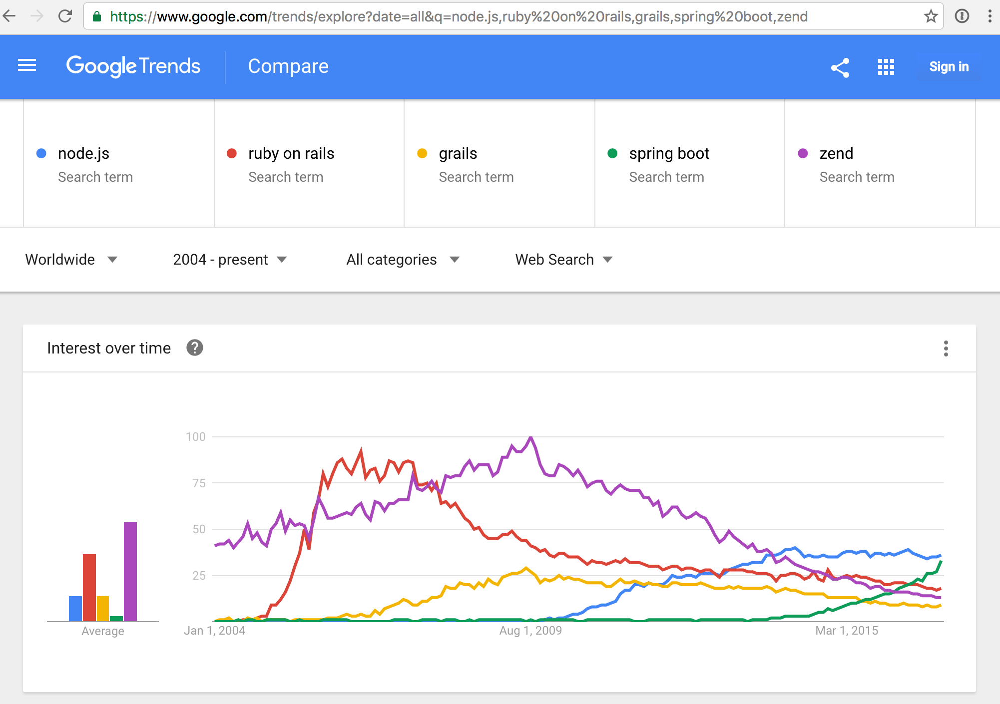

who uses node.js
 and many more ...
and many more ...
navigate with left, right keys
"Node.js® is a JavaScript runtime built on Chrome's V8 JavaScript engine. Node.js uses an event-driven, non-blocking I/O model that makes it lightweight and efficient. Node.js' package ecosystem, npm, is the largest ecosystem of open source libraries in the world."
Source: https://nodejs.org/en/
and many more ...

basically anything:
windows, linux, mac, arm, docker ...
Ryan Dahls thesis
io needs to be done differently
L1-cache 3 cycles
L2-cache 14 cycles
RAM 250 cycles
Disk 41'000'000 cycles
Network 240'000'000 cyclesdon't block on I/O access
but how?
Threads in combination with Object oriented programming can be really painful and error prone.
libuvwhat's underneath
- node.js is built on top of google chrome V8
- Microsoft submitted a pull request for support with it's ChakraCore in January 2016
pick whatever you like!
debugging node.js within IDE or with node-inspector or with node >= 6
# install once
npm install -g node-inspector
# use
node-debug myapp.js
# chrome inspector included with node >= 6.0
node --inspect myapp.jsrestarting node.js server on code changes use nodemon or forever
# install once
npm install -g nodemon
# use
nodemon myapp.jsfile server
var http = require('http');
var fs = require('fs');
var server = http.createServer();
server.on('request', function (req, res) {
if (req.url == '/favicon.ico') return res.end();
var stream = fs.createReadStream(process.cwd() + req.url);
stream.pipe(res);
});
server.listen(8000);
console.log('fileserver running at: http://localhost:8000');using EventEmitter
var http = require('http');
var fs = require('fs');
var server = http.createServer();
server.on('request', function (req, res) {
if (req.url == '/favicon.ico') return res.end();
var stream = fs.createReadStream(process.cwd() + req.url, 'utf-8');
stream.on('data', function(data){
res.write('\n\ngot data: ' + data);
});
stream.on('error', function(err){
res.write('\n\nshit happens' + err);
});
stream.on('end', function(){
res.end('\n\ndone, no more data');
});
});
server.listen(8000);
console.log('fileserver running at: http://localhost:8000');get some great interacitve node.js lessons:
npm install learnyounode -g
npm install workshopper -g
npm install adventure -g
npm install functional-javascript-workshop -g